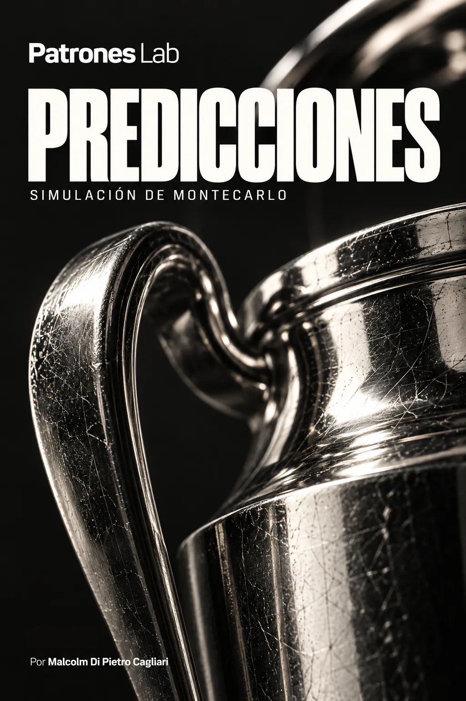

Ожидаемые голы в футболе
Модель логистической регрессии для оценки вероятности гола при каждом ударе на открытых данных StatsBomb, с проверкой по матчам и применением к чемпионату мира 2022 года в Катаре.
Модель логистической регрессии для оценки вероятности гола при каждом ударе на открытых данных StatsBomb, с проверкой по матчам и применением к чемпионату мира 2022 года в Катаре.

Вероятностная модель ожидаемой угрозы в футболе на открытых данных StatsBomb. Модель оценивает вероятность гола в следующих пяти действиях.

Анализ статистики чемпионата мира 2022 года с общедоступными данными StatsBomb, направленный на обобщение индивидуальных выступлений и сравнение игроков с помощью процентильного радара.

Моделирование миллиона сценариев чемпионата мира по футболу 2026 года с рейтингами Эло для оценки вероятности выхода в полуфинал, участия в финале и становления чемпионом.

Моделирование миллиона сценариев LaLiga 2026/27 с рейтингами Эло для оценки вероятностей наиболее важных результатов чемпионата.

Модель количества забитых голов с распределением Пуассона для расчета силы атаки и защиты каждой команды в сочетании с моделированием Монте-Карло для оценки вероятности чемпионства.

Моделирование одного миллиона сценариев Лиги Наций 2026/27 с рейтингами Эло и моделью количества забитых голов на основе Пуассона для оценки вероятностей победы в группе, выхода в плей-офф и становления чемпионом.

Биномиальная модель для анализа вероятностей голов и исходов матчей на основе ударов и процента реализации 36 клубов Лиги чемпионов 2026/27.